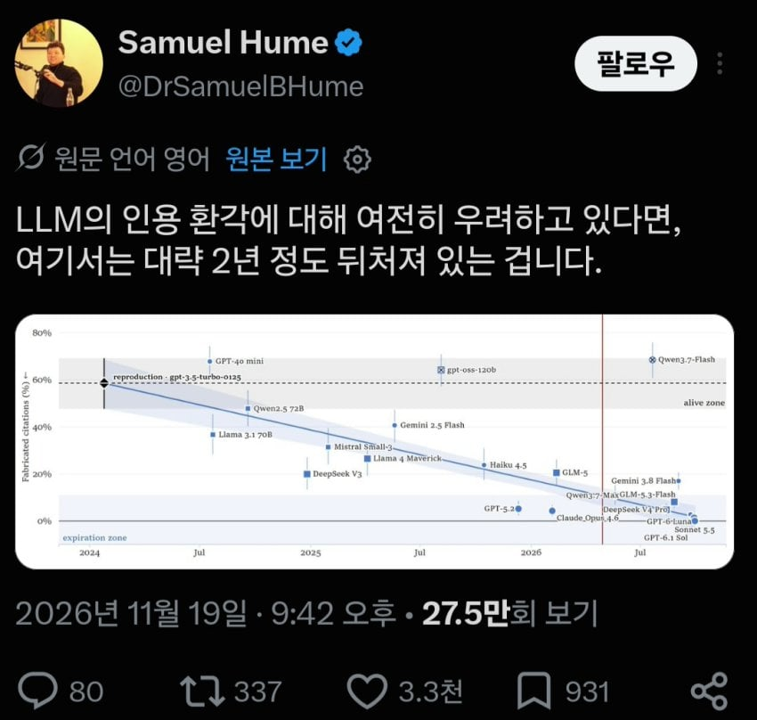
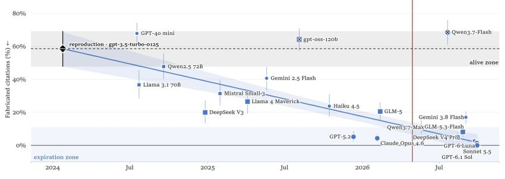

0에 수렴중이라고 함..


0에 수렴중이라고 함..
이번에 잼민이 4.0이 쫌 나음
정확하게는 토큰 개 처먹는 상위 모델들 한정.
당장 클로드도 오푸스 5.5 노력 수준 높음에서 중간으로 내리면 환각 심해지는게 보임.
그래서 2년 뒤쳐진다는...
오푸스 5.5가 2년임?
여전히 환각 있음….유명하고 레퍼 여럿있는 주제에 대해서는 거의 없는데 아직 덜 밝혀진 부분이 많거나 신생부문이면 헛소리 많이 함
정확한 숫자데이터를 가지고 만드는 시트 이런건 찐빠 안내더라
찐빠 존나 나는데요